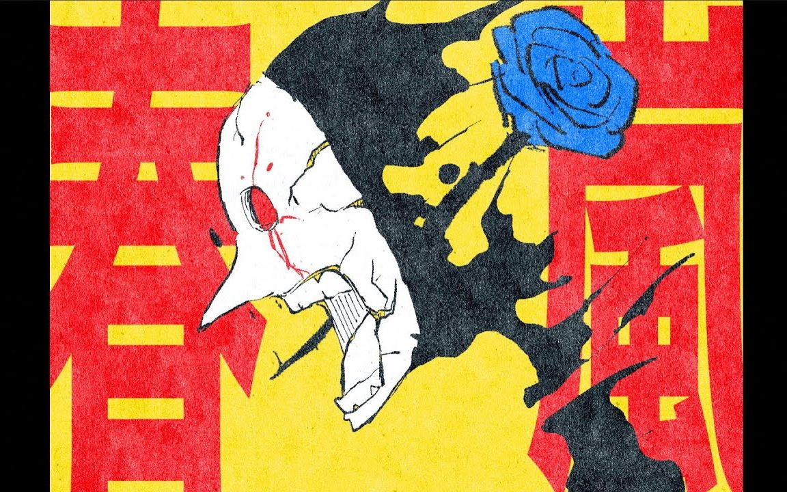
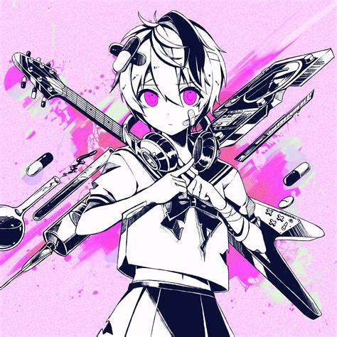
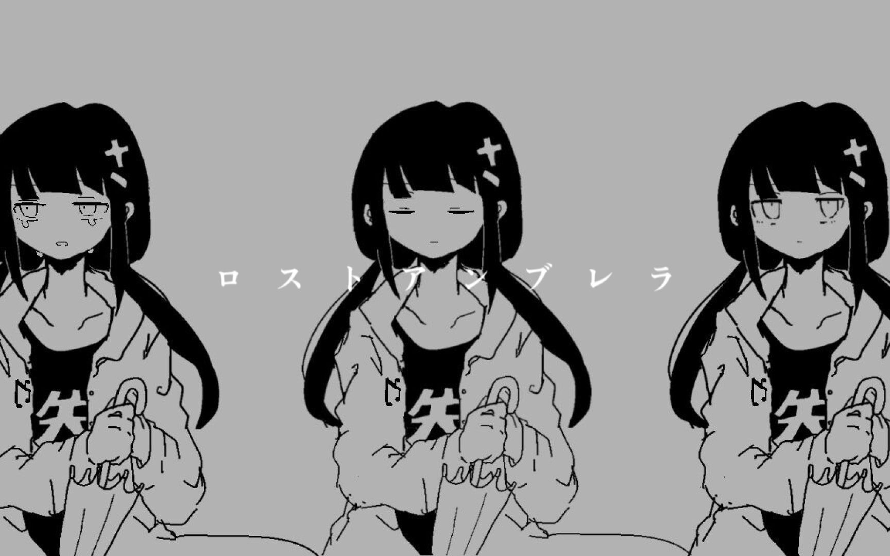
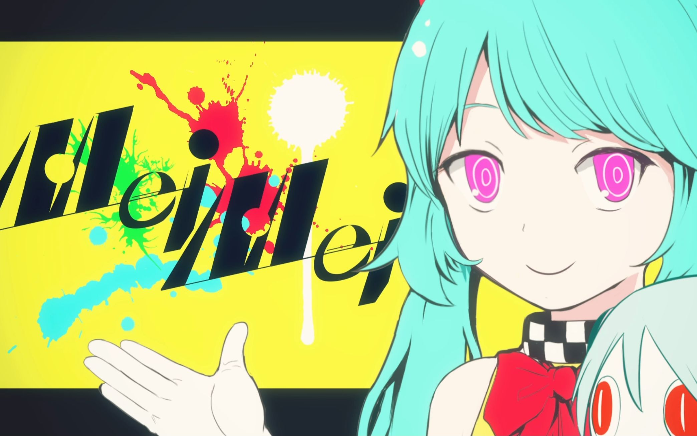
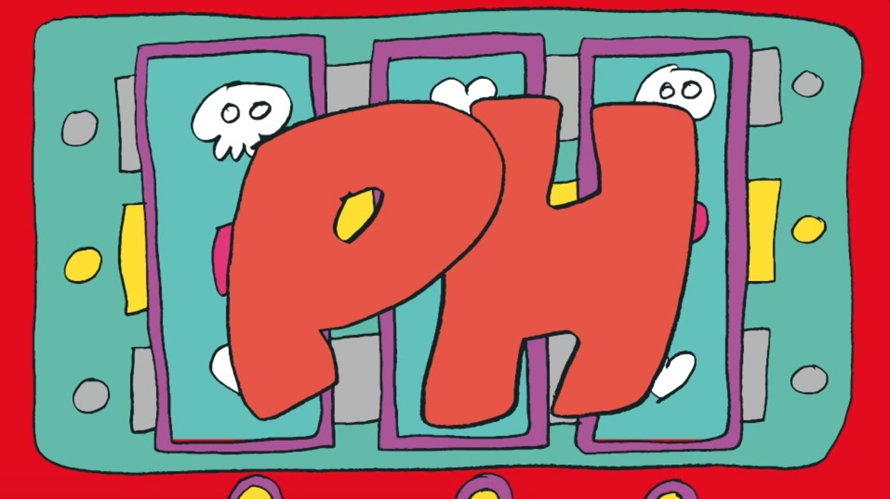
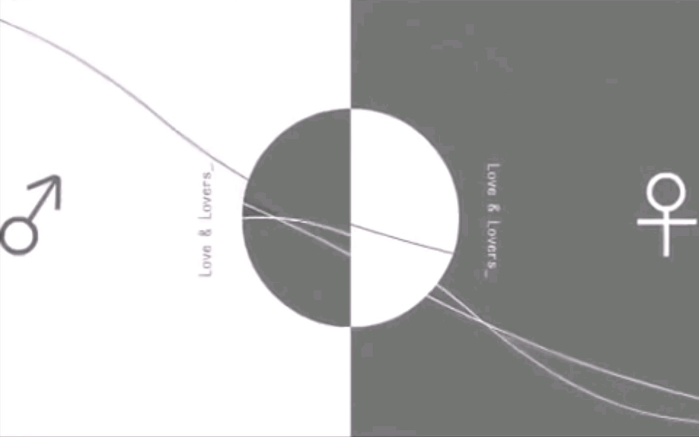
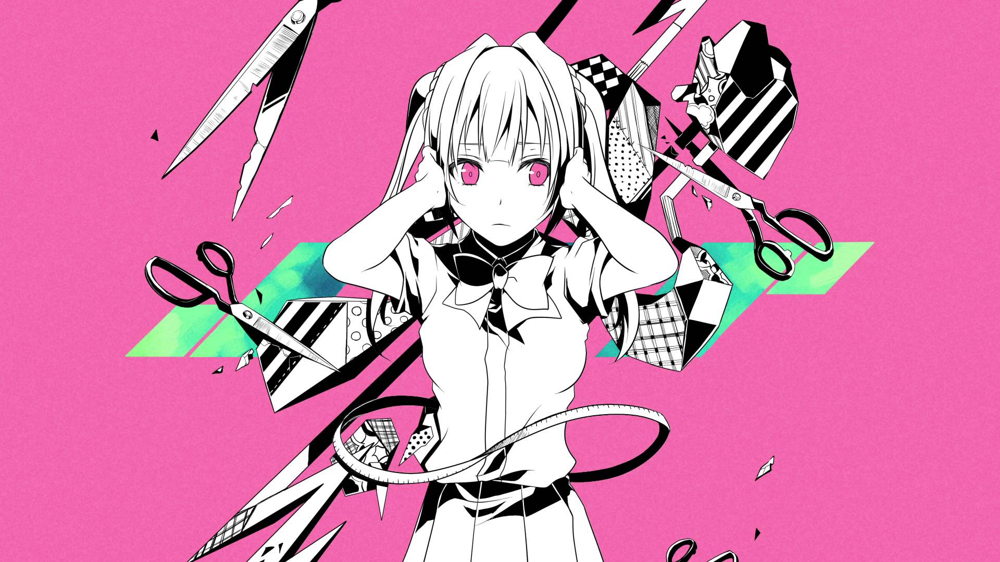
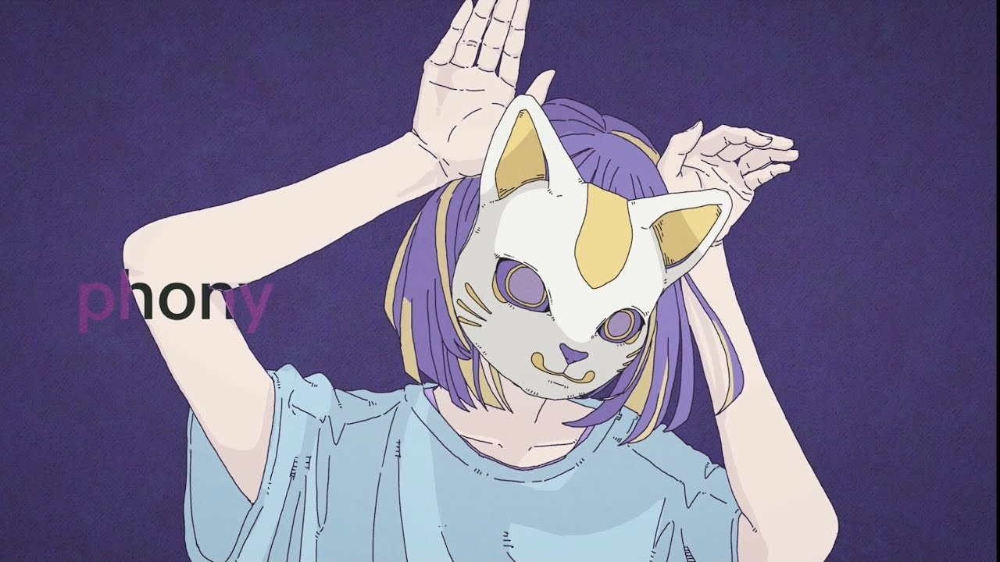
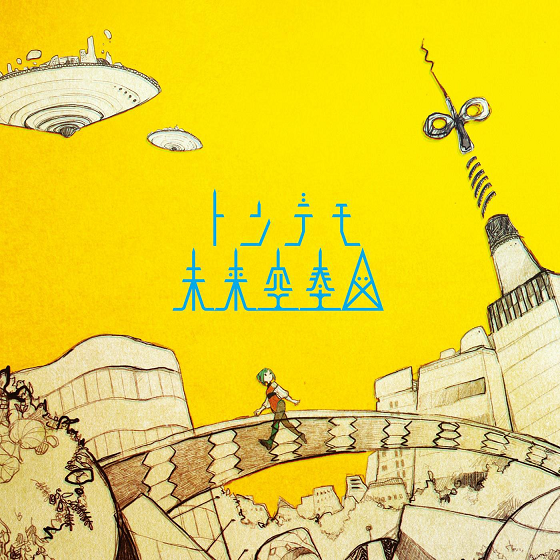

俗话说的好，大年初二，适合听歌。刚好之前因为觉得自己的某云的红心音乐太多、鱼龙混杂，整理了一次歌单，挑了 20 首V曲放在一个歌单里。最近无事，于是借此机会浅浅点评一下，也算是为这么久的单曲循环留下一点文字记录。
首先还是浅浅科普一下相关的知识。
VOCALOID 歌曲，就是常说的假人歌，这部分歌曲都是使用音乐软件调出来的而非由真人演唱（当然很多好听的歌曲会被翻唱）。VOCALOID 本来就是一个音乐软件（或者说是引擎？），最出名的初音未来（初音ミク）就是其中的一个声库，除此以外还有镜音双子、巡音流歌、歌爱雪等声库，以及面向中文的洛天依等。这些声库由于通常都有完整的形象和一些人设（不会太多，毕竟要留给作者发挥），因此也被拟人化为一个歌手，也就是虚拟歌手 / 歌姬。大家也通常直接用 VOCALOID 指代这些歌曲，同时有 V 家、术力口（源自日文名 ボーカロイド 的中文幻视版）。但严格来说并不是机器人唱歌都一定是 VOCALOID，因为还有其它歌曲合成软件（比如 CeVIO，上面就有着基于歌手花谱（かふ）所制作的歌姬可不），但这里为了方便就一并把所有假人歌都算上了。
P主，指的是制作 VOCALOID 的人，P 取自 VOCALOID Producer。很多 P 主都有一些别号（副P名），通常格式就是 “XX P”，比如 P 主 Neru 也被称为押入れP（壁橱P）。
niconico动画（ニコニコ動画） 是日本的一个弹幕视频网站，A 站 AcFun 和 B 站 BiliBili 的爹。通常 P 主们都会把自己的作品投到 N 站上。按照播放量（再生数）的不同，歌曲可以有不同的分级，比如播放数超过 10w 可以称为殿堂入り（殿堂曲达成），超过 100w 可以成为伝説入り（传说曲达成），超过 1000w 则是神話入り（神话曲达成）。当然 Youtube 和 A 站、B 站也会有很多歌曲的转载或者官方投稿。
某云歌单在这里：Link。在写作时歌单里一共 20 首歌，涵盖了多个 P 主和歌姬，但由于笔者个人喜好不保证任何频数分布的均匀。这里是上篇，包含前 10 首歌。下面就开始正式盘点吧。
1. 春嵐（春岚 / 春日风暴）

P 主：john
使用歌姬：初音ミク
投稿日期：2019年12月7日
播放量：已传说
john 是我非常喜欢的一个 P 主，他的作曲风格很鲜明，曲子通常或是轻快（春嵐、凯瑟琳），或是有种不紧不慢的摇曳的感觉（比如 rabbit、彼岸、反杀）。而且他调的初音音色特征非常明显，属于一听就能听出来。该怎么描述呢，土一点的说法就是歌姬声音很轻，有种要被背景音乐盖过去的感觉，但又能跟上音乐，从而给人一种游离的迷幻酒醉之感。
而《春嵐》则是众多 john 曲中我最喜欢的一首。曲子开始是反复的合成声”Stand by me, but I bet I’ll never be back”（这段很多人没听清，我也是，看了词才知道），然后便迅速进入主歌。主歌语速非常快，快得使人思维几乎无法跟上便进入了副歌的呐喊，就像一阵疾风迅速吹过。主歌的调子几乎和 Rap 一样，没有很大的音高变化，仿佛只是要一口气把事情讲完，又像是一段长长的引线，一路燃到副歌，然后便迎来一阵情绪的爆发——
春の嵐呼んだ
呼唤了春天的暴风雨
-
僕は泣いた
我哭了起来
-
心傷つけられた
心已经受了伤
-
そんなの思い上がりでしょ？
你就是这么洋洋自得地想着吧？
-
どうせそうよね 分かっているけど
反正肯定是那样 我早就知道了
这段配上 PV 的演出效果非常具有感染力，这里不得不提一下，这首歌的 PV 也画得非常的具有艺术气息，抽象而富有意味。而这段爆发以最后
揺れる炭酸(サイダー)
摇晃着的汽水
-
飲み干したら
一饮而尽之后
-
サヨナラしましょ
就说再见吧
结尾，非常的潇洒，而且听过的朋友们能感受到这段非常干净利落，不拖泥带水，整首曲子就如同取名一样，像一阵春日的风暴，刮得人头晕目眩，等风暴过后晕晕乎乎时，喝完一口汽水，扔掉，便到此为止。歌词的其他部分写的比较意识流，我觉得写的很好（很有感觉，啊），但是题主不是很专业，就先这样感性地赏析一下了。
2. ベノム（猛毒）
P 主：かいりきベア / 怪力熊
使用歌姬：v flower
投稿日期：2019年3月27日
播放量：接近神话（900w+ 再生）

猛毒，名副其实，就是一首毒曲。怪力熊的一大特点就是能写出让人非常有记忆点的副歌曲调，从而让整首歌产生毒性。这首歌的词其实没有啥好分析的，非常意味不明，但是副歌这段非常洗脑：
あらま
哎呀呀
-
求愛性 孤独 ドク 流るルル(愛をもっと)
求爱性 孤独 毒液 渐渐流淌 请将更多爱
-
頂戴な ねえ
给我吧。 呐
-
痛い痛いのとんでけ
痛痛都快快飞走啦
-
存在感 血ドクドク 零るルル(無いの？もっと)
存在感 血 咕毒 咕独 渐渐溢出 （没了吗？将更多 ）
-
愛(愛)哀(哀)
爱（爱）哀（哀)
-
叫ベベベノム (めっ！)
喊出来呗 Ve Venom (呐！)
这首歌的伴奏也是充满了怪力熊标志性的电吉他，主旋律给人一种非常摇摆的感觉，这也和怪力熊非常喜欢使用“反复”有一定关系。猛毒这首歌的反复非常多，贯穿全曲的就是一小段音重复两次的手法。主旋律开头就暗示了这首歌的这种风格。副歌的大量中间歌词也都采用谐音或者同音来达成这种重复两次的效果，例如“孤独”和“毒液（ドク）”，还有拟声词””ドクドク（咕咚咕咚）“，痛い痛い，Sick Sick。此外还有一个字重复多次，比如 Ve-Ve-Ve-Venom，这也是怪力熊非常喜欢用的一种方式（他还是那么爱 哒哒哒哒哒）。这让整首歌变得非常脍炙人口，也是“毒性”的来源之一。
同时这首歌的 v flower 调的非常跳动，很有意思。v flower 的特征就是一种假小子的感觉，声线听上去很男性化（偏向十五六岁的少年音的感觉），但是还是女孩子。v flower 唱猛毒的感觉让这首歌有一种 “面无表情但是在摇摆的感觉”，很有意思。重复、摇摆、跳动，让这首歌成为令我印象非常深刻的一首毒曲，同时也使得他非常适合在 KTV 里唱。
3. ロストアンブレラ（Lost Umbrella / 丢失的雨伞）

P 主：稲葉曇 / 稻叶昙
使用歌姬：歌愛ユキ
投稿日期：2018年2月27日
播放量：已传说
丢伞神曲，稻叶昙式的调教配上稻叶昙式的 PV，味非常正。稻叶昙也是属于那种个人风格非常明显的 P 主，他的风格和 wowaka 有点相似，非常有疾走感，但人声又没有 john 那么模糊不清。
这首歌全程的鼓点非常劲，我甚至怀疑太鼓达人上有这个谱。第一句就非常抓耳：
僕を連れてって
带上我吧
-
浸み込んでしまう前に
在完全浸透之前
这两句也是副歌部分的主要线索，作为一把雨伞的自述。这三句歌词在歌词里的节奏是这样的：僕を，連れてって，浸み込んでしまう前に，两短一长，而后面的“見えないまま掴みたいとか どうせ叶わないからさ”几乎就是连起来的了，如果听得懂的话把这个歌词放第一句确实非常吸引阅读兴趣，立刻交代了自己作为雨伞的这个背景，同时抛出一些具有哲思的话语。
副歌部分的节奏型非常相似，但是相比于开头（几乎无伴奏），副歌给了非常强劲的鼓点，就像雨哗哗地下大了一样，急促的鼓点也带来的非常爽快的疾走感，就像是你撑着伞在雨里跑。而开头则是非常安静，就像一把放在角落的雨伞的自述，像是雨要下未下时的样子。
4. Mei Mei

P 主：ピノキオピー / 匹诺曹P
使用歌姬：初音ミク
投稿日期：2018年07月29日
播放量：已殿堂
匹诺曹嗷，最↑喜欢的 P 主。不过我首先列的这首歌相对较冷门，也不算匹的早期作品，所以听过的人可能不是很多。前面很多歌的亮点大多在出色的编曲、爽快的节奏，但是匹的很多歌对我更多的是一种情感上的共鸣。
这首 Mei Mei 人称现充之歌，讲的似乎是匹自己去旅游的经历，PV 由他的旅游见闻（包括许多照片、视频）组成，有才的网友会在放到一些事物的时候打趣说这是 XX P主。
这首歌曲调和节奏非常简单，主歌就是 “あ~” 然后怎么样怎么样（说一个见闻），副歌就是像摇到外婆桥（神秘比喻）一样的 “Mei~ Mei~ Mei Mei Mei”，非常易懂好记。但是这也体现匹老板调教的厉害之处，因为我从这样的简单的歌曲中感受到一种欢乐的气息，好像初音真的在很高兴地给你介绍这是什么什么。并且非常巧的是，这首歌初见时候我也在旅游，所以个人情感加分占比非常大。
同时，这首歌还有一个大亮点，就是在副歌收尾的那一段，举个例子，”楽しいこと くだらないことだけで” 这句（后面还有很多相同的），这里的情感抒发非常直接，也归功于前面 “Mei~” 了好久，积攒的情感才能在此刻一口气呐喊出来。结尾的词也非常打动我：
楽しいこと くだらないことだけじゃ
尽管只用开心的事和无聊的事
-
腹は膨れないけど
是无法填饱肚子的 但是呢
-
優しい時間 君といる時間だけが
只要温柔的时间 和你在一起的时间
-
ずっと続けばいいのにな
能够一直持续下去 就好啦
因此，这首歌也成为我每次旅行（或者一段重要经历）的归途时必听的一首歌。
5. p.h.

P 主：SEVENTHLINKS
使用歌姬：v flower
投稿日期：2020年5月29日
播放量：已传说
如果要我从这 20 首里挑一首最毒的，可能就是从猛毒和这首里选了。富有化学味道的标题名2，迷幻的调教，让这首充斥着一种嗑大了的毒性。
说实话，第一次听的时候还以为是 john 的歌，主要这个 v flower 调的和 john 的初音居然有那么些相似（都会被背景音乐盖过去），不过后面 john 也 remix 了这首歌（b 站看到个评论，“感觉 john 咬字比本家清楚”，笑死我了，旗鼓相当的对手）。
毒曲大多都有着反复的特点，不过不同于猛毒的两次重复，p.h. 的主歌是这样重复的：
注射器にキスをした
对注射器献出亲吻
-
冥界は冷静に笑った
却被黄泉冷静地嘲笑着
这是原词，实际唱法是这样：
注注注注注射器
にににににキスをした
冥冥冥冥冥界は冷静に笑った
虽然这个处理好像很简单，但是在背景音的鼓点下真的非常带感！同时你还可以发现居然有一点丁真顶真，器和に。然后下面依然是相同的节奏型
p p p p p p.h.
但是在 P 主（堪比 john 的咬字水平）的调教下其实你并不能清晰地听见这六个 p，总是一种似有似无的感觉，有几个音几乎就是鼓点在代工，更有一种迷幻、喘息、上不来气的感觉。
同时，在副歌前的那段也非常妙，同样也是大量重复，“亡命している”和“生命を蹂躙”重复了很多遍，像是主人公已经失去理智了，配上 PV 的圈圈眼、圈圈背景，让人晕晕乎乎，似乎在缓过劲来，然后突然一句
幸福に浸って帰らぬ医療廃棄物となった
变成了被幸福浸泡而回不去的医疗废物
直接强势进场，带着歌曲到副歌，直接”注注注注注射器”走起，像是晕好了再扎了一针，非常天才的设计。
6. 裏表ラバーズ（里表情人）

P 主：wowaka / 现实逃避P
使用歌姬：初音ミク
投稿日期：2009年08月30日
播放量：已神话
前面提过 wowaka，这不就来了。这位随便挑一首几乎都是神曲。我作为疾走感爱好者，鹅妈妈和里表情人都是心头好。这首歌标题断句有的人会断成里/表情人，其实是里表/情人，里和表作为一对反义词，想要表达的是LOVE让人胡思乱想陷入疯狂的状态。
为了达到这种效果，歌曲在短短的三分钟塞入了大量的咬字，如果说前面的歌的“疾走感”有一些调教上的轻飘飘、沙哑感带来的加成，这首则是纯粹的快，快到后面给人一种手忙脚乱的感觉（打pjsk打的）。不过和主歌的急速不同，副歌虽然也是很快，但其实比较有规律可循，歌词都以 “てー” 结尾，一句一句似乎是在呐喊，逐渐强烈，最后用“ラブラブ”将情感爆发出来。
7. 空中分解

P 主：すりぃ
使用歌姬：鏡音レン
投稿日期：2018年3月3日
播放量：已殿堂
这首是这位 P 主的初投稿作（新人都是怪物系列），歌姬选择的是镜音连（弟弟），少年音让这首歌非常酷。这首歌只有1分钟，但是毒性超强（喂你都说了几首毒性强了），不过 P 主在后面发了加长版（long ver.，其实也只有 3 分钟）。
开头不讲废话，直接 “嗨” 一下，把你抓住。由于整首篇幅不长，前奏也很短，很快就开始了主歌的部分，主歌也是有种短促而急快的感觉，不过最值得一提的还是副歌：
空に舞い散る腕はなりふり構わず踊り出す
在空中四散飞舞的手臂 再也无需顾及衣着
-
影に隠れた足は気を使ってさって散りばめてく
藏在影子里的双腿 就这样起舞 细心地把它们切下镶嵌起来
-
愛した傷はだれにも愛されることはなく
因爱而生的伤痕 却不被任何人所爱
-
僕が嫌いな心が何事って今日も笑いかけてく
我所厌恶的这颗心脏 今天也若无其事地欲笑又止
作为毒曲，这首歌也毫不例外地用了重复。以第一句为例子，舞的读音是（まう），重复的就是这个ま：
空に まままうい散る腕は なりふり構わず踊り出す
这种重复几下后面再一口气念完的风格和 p.h. 有点像，但是这首重复得更少，后面的部分更多，从而相比 p.h. 有一种更帅的感觉（当然使用镜音连也有加成）。
同时背景的电吉他也非常帅，但是电吉他并没有喧宾夺主，而是在恰到好处的地方装饰了主旋律。同时 1 分钟唱完的戛然而止让人也回味无穷，非常适合单曲循环的一首上头曲子。
8. 失败作少女

P 主：かいりきベア / 怪力熊
使用歌姬：初音ミク
投稿日期：2015年08月08日
播放量：已传说
笔者最爱的曲子之一，真是白听不厌。作为怪力熊早期作品，这首歌并没有炸厕所，也没有怪力熊近期的公式作曲气息，而是有着非常明快的曲调加上非常帅气的电吉他（后面还有一段非常厉害的吉他 solo 部分）。
这首歌也是疾走型的歌曲，但是作为快歌，它并不是通过大量的词（wowaka、暴走P）来实现的，而是通过吉他加上架子鼓（似乎是？也可能是别的鼓）完成的。主歌部分，架子鼓全程跟在背景里，似乎在催着初音往前。而在副歌开始时（实际上是开始前的那一段），电吉他进入战场，作为绿叶装饰初音的声音，而在副歌结束立即占据主导，顺着歌曲的感觉接管主旋律，又在此基础上衍生发挥，在曲子的2分钟左右开始电吉他 SOLO。
副歌部分演唱很迅速，不过大多以“って”结尾，在曲的层面上让这种随性的疾走的调形成韵律感，在词的层面上又有一种倾诉、呐喊的感觉。
わたしって失敗作だって
我就是所谓的失败作吧
-
っていらない子なんだって…
我是不被人需要的孩子吧…
-
何やったって 頑張ったって
不论做什么 即使再怎努力
-
ダメらしいや
也是不行的吧
-
愛されたくて偽って
装作被人愛著
-
もっともっと笑顔で
只要露出更多更多的笑容
-
いればいいかな
就可以了吗
以及不得不提一下这首歌的点睛之笔，就是在电吉他 SOLO 的结束后出现雨声，然后音乐冷静下来，配合着这里的词：
神様 もしも生まれ変わることが出来たら
神啊 如果能让我重生的话
-
愛される子になれますように
我想要成为被人所爱的孩子
有一种祷告的神圣感，而后随即电吉他和架子鼓又被重新放入曲子，这种片刻的宁静被即刻打破，歌曲又回到熟悉的主旋律。这里的手法和《琵琶行》中那个”东船西舫悄无言，唯见江心秋月白”的感觉有点类似。
同时这首歌还有 MARETU 和 稻叶昙 的 Remix 版本，也都非常的好听，推荐一下。
9. フォニイ（伪物 / phony）

P 主：ツミキ / 积木P
使用歌姬：可不(KAFU)
投稿日期：2021年6月5日
播放量：近神话（870w+）
这首歌可以说是 2020 年来假人歌里的现象级歌曲之一了，用时仅80日左右达成传说曲，同时于周刊达成门番，为周刊中第一首非 VOCALOID 的门番曲目，播放量更是在笔者写作时（24年初）直逼神话曲。这首歌只需要两个字概括：好听。真的是无解的好听。
第一次被吸引是歌曲 intro 部分结束的那个前奏，由非常快速的乐器音，像新印象主义的修拉用点彩画画一样，急促的点音勾勒出旋律的模样。第一段 antipathy world 结束后的间奏更是一绝，和开头那段类似，但是不知道积木使用什么乐器音效，更有种未来感，让人感觉逐渐在下沉。
除了出色的间奏，主歌也是非常亮眼，从 “何時し…” 开始就似乎是不和你讲废话一样地往下唱，然后一路疾走到副歌开始。尤其是这一端特别有节奏：
何時しか言の葉は疾うに枯れきって
不知何时起语言早已枯萎
-
事の実があたしに熟れている
事实的真相在我心中成熟
-
鏡に映り嘘を描いて
将镜子映出的谎言描摹
-
自らを見失なった絵画
那幅图画让我迷失了自我
然后积木借着大伙沉浸在这个节奏里的时候，用 papa palapa 的像应援一样的过渡来保持住这种节奏感。下一步引出副歌，非常聪明地用一个问句，同时用反复的 “何故 何故” 来营造呐喊的感觉，自然将情绪引入高潮。
副歌开始的 “簡単…” 直接用很高的音开头，将人的注意力一下吸过来。副歌的旋律非常优美，不得不佩服积木的旋律水平（所以炸厕所炸多了写歌就能这么强是吗）。下面这两句真的是顶级好听。
簡単なことも解らないわ あたしって何だっけ
简单的事情也搞不明白啊 我到底是什么来着
-
それすら夜の手に絆されて 愛のように消える
被囚禁在夜色的手掌里 如爱一般消散
同时，不同于许多 P 主的意义不明的歌词，这首的词也作的非常之好，开头以 “这个世上没有比假花更美的花” 起兴，呼应了 phony 这一标题，中间的歌词也是充满了哲思，值得细品。这首歌可以夸的地方太多了，几乎是一首完美的歌。
10. 蜘蛛糸モノポリー（蜘蛛丝 Monopoly）

P 主：sasakure.UK / ささくれP
使用歌姬：初音ミク
投稿日期：2013年4月16日
播放量：已殿堂
sasakure 这位 P 主的特色非常鲜明，他会使用大量的效果音（类似 8bit 的那种电子音音效），使得整首曲子显得空灵、遥远。他还很喜欢以小说为背景写歌，这首歌就是改编自芥川龙之介的短篇《蜘蛛之丝》。
这首歌同样沿袭了 sasakure 一贯的风格，空灵的曲风，初音的声音像从很远的地方传来。前奏的钢琴尤其吸引人（我相信不少人是听了前奏就立刻被吸引来的），这也是 sasakure 的传统前奏杀风格了。在前奏的一小段结束后 sasakure 立刻“露出本性”，用 8bit 又重放了一遍主旋律，使得这首歌未来感拉满。不过相比他的其他歌，这首歌的 8bit 成分要少一些，但要更加空灵，就像在一个深不见底、充满蛛网的洞穴，初音有点虚渺又有点尖细的声音仿佛就如同一缕银色的、飘荡的洞穴微光里的蛛丝。歌曲中间的停顿以及结尾如同机器人一样断断续续的 らららら 都给人一种蛛丝断裂的感觉。
这首歌的知名度还挺高的（某音还有各种手书），不得不归功于它亮眼的前奏。不过 sasakure 还有一些更加 8bit 和故障风的曲子，比如神威（纯音乐，以 TJ.hangneil 的名义发的，很音游）、ネガポジ＊コンティニューズ、大未来电脑等等。